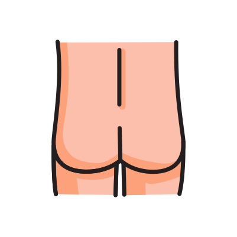

När skrevs receptet?
När tog receptet slut?
Dosering
Hur gammal är patienten?
Hur stor kroppsyta ska smörjas?
Ansikte och hals
Bröstkorg och mage

Rygg och skinkor
Arm
Hand
Ben
Fot
Hur länge ska patienten smörja?
Hur många gånger per dag ska patienten smörja?
RECEPT
3x1 i 30 dagar från 2022-07-01 till 2022-08-01. 3 stycken förpackningar á 98 tabletter. I dagsläget borde 22 tabletter finnas kvar som enligt receptet bör räcka i 10 dagar